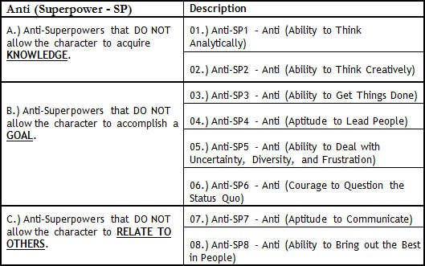
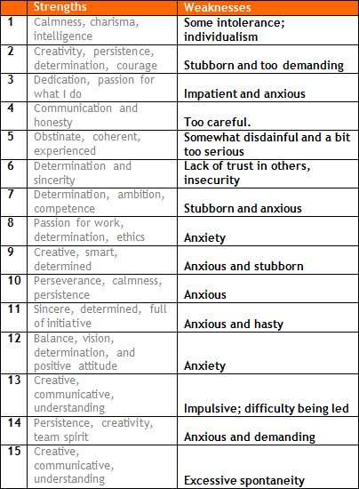

Why do you think so?
Right now, from the top of my head, I cannot remember anything that went wrong.
The well-known quote is “if you have no FAILURE to share in your application, you already have a failure.” (Unknown author)
Tell me about it.
You know... every year, I get surprised with students who claim that there is nothing that can be said about what they do not do well. After all, there are so many different ways to make a mistake, right? Through the years, I could identify where (and how) the MBA applicant can make mistakes. I’ve found 8 different possibilities - see Table A below.
Table A: 8 Anti (Superpower – SP) - Description

Uh, but I know this table: those are the 8 Competences, the 8 Superpowers.
Yes, essentially, it is the other face of the coin. One of the 8 ways to make a mistake lies on the inability to master one of the 8 Competences.
Ok, then, from what I understood, the superhero won’t have the X weapon on his tool belt at the time he needs it.
Exactly.
I already know how he succeeds when he has the tool, but concretely, how does he err?
Have you read the testimonials of the 4 Heroes? Observe that in the last paragraph he said exactly which Superpower he lacked when he most needed it.
Can describe each of those 8 possibilities?
At least in one thing I must have done wrong, huh? It is impossible for one not to have done anything wrong in at least one of those elements, right?
Once I show the table with the description of the 8 Anti (Superpower – SP), the applicant inevitably finds out that “oh, really, now that I’ve seen this list, I can say that I don’t do well in at least 2-3 of the anti-skills.”
Perhaps the point is not to write something “too silly”.
Sometimes we need to go back to discussion: “what are the essays really for?” Let’s not forget that what they want is to get to know you. Do not write anything in your essays that won’t help the ad com guys understand the values of your candidacy.
At the same time, Megaron, as it happens with Justice, there is a principle that dictates that the culprit cannot be forced to produce proof against him.
But, Nicholas, you must understand that the FAILURE theme should not necessarily mean something negative, ok? In the USA, there is tolerance with those who make mistakes. There is a culture of “second chance.” They like to hear STORIES of people who failed.
Sure, Americans hold a clear perception of Risk versus Return. Perhaps I have to think about something that involves risk… something out of the box, do you agree?
One of our tasks here is to try to dig something in your life, a situation in which you took the risk to do something unexpected.
OK, I can anticipate the fact. If I have never made a mistake, I have probably never taken the chance in life. However, it won’t work to say that I went after experiences that, though expected, were hard to accomplish?
I don’t know if you realize it, but perhaps this is the main problem of consultants in an application when it comes to discussing FAILURE. Everyone knows what to expect from an analyst regarding performance to succeed at BCG, McKinsey, or Bain. It is all there in the handbook - every week someone will tell the guy what to do and how to do it.
You make the work of a management consulting analyst sound easy to carry out.
Whoa, that’s not what I meant. I said that what they expect from you is right there written on some paper. I know it is super hard to meet expectations. But you’ve got to understand that the ability to describe a FAILURE event is highly important.
I agree, Megaron. We’ve already talked about that. Nowadays, in the Knowledge Era, it is less “costly” to fail. Way before, in the Industrial/Manufacture Era, the cost of a mistake was huge.
That’s it.
Perhaps what matters is to discuss the frustration that arises from the mistake made, don’t you think?
Good point. Just so you know it, some students felt devastated after they had a denial (the so-called DING) from HBS, for instance. They confessed, “Megaron, it was hard to get that DING. Applying to Harvard was the first difficult thing in life that I tried without success.”
I get that. I know it is a bit scary to hear that. But, OK, I understand where you’re heading. Interesting, Megaron, the division of your table among the three dimensions:
01.) Strengths that allow the character to acquire KNOWLEDGE;
02.) Strengths that allow the character to accomplish a GOAL;
03.) Strengths that allow the character to RELATE TO OTHERS.
02.) Strengths that allow the character to accomplish a GOAL;
03.) Strengths that allow the character to RELATE TO OTHERS.
Exactly. Let me ask you: which of the 3 dimensions do you think the unprepared applicant will not discuss?
I believe he will avoid number (3); they are more likely to discuss (1.) and (2.)
Predictable, right? Take a look at what the 15 participants of a reality show said about their main weaknesses as business people.
Table B: Reality Show - Anti-Strengths

Ok, now I already know what you’ll say: they have repeated the classical mistake of looking only at themselves?
Exactly. If in their view, people really matter, they would not highlight such “classical flaws” as “anxiety”, “perfectionism”, and “self-demanding.”
I know what you’re saying. These were the same answers provided in the group dynamics in the selection processes for the trainee program. It is the typical answer of someone who has never stopped to think about the subject.
Alternatively, as we said, someone who doesn’t care much about those around him?
Please, DO NOT make the 4 basic mistakes:
(1.) Go too easy: talk about a failure that is not exactly a FAILURE; disguise it;
(2.) Talk only about yourself and not about the way you’ve interacted with those around you;
(3.) Hide yourself and emphasize the group’s fault (we want to read about what YOU did wrong).
(2.) Talk only about yourself and not about the way you’ve interacted with those around you;
(3.) Hide yourself and emphasize the group’s fault (we want to read about what YOU did wrong).
All right, I get it. You said four, but described 3. What is the fourth basic mistake?
True, one more to go. Mistake number 4 can be seen in Rudyard Kipling’s words: “We have forty million reasons for failure, but not a single excuse.” You should not write as if you were defending yourself from an attack, ok?
What about the quote: “your strength is your greatest enemy?”
I know this is an interesting resource in movies of superheroes, but it does not work in the application. If you have a superpower on your belt, it will bring you only happiness, never problems of any kind.
Ok.
Show time: write your STORY to answer this question: “Describe a setback or a failure that you have experienced. Which competence would have helped you attain success instead?” Go to Action Plan_Km 12.
What about the feedback that you will send me on my text? I can imagine it will be different from the previous ones.
It is true. Only element (4) of my assessment will change. Remember I want to read a STORY in which you show you failed with people.
01.) WHAT does character want? WHO is this character?
02.) WHY does character want it?
03.) WHICH obstacles will character face?
04.) HOW did you fail regarding the group (or individual)?
05.) HOW does this episode of failure (setback) change character?
02.) WHY does character want it?
03.) WHICH obstacles will character face?
04.) HOW did you fail regarding the group (or individual)?
05.) HOW does this episode of failure (setback) change character?